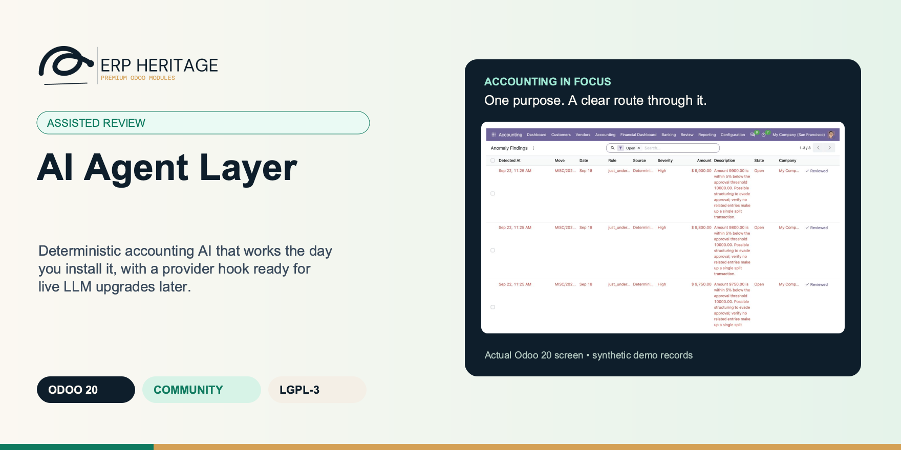
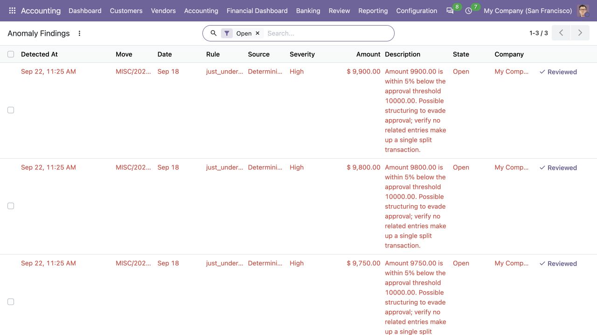
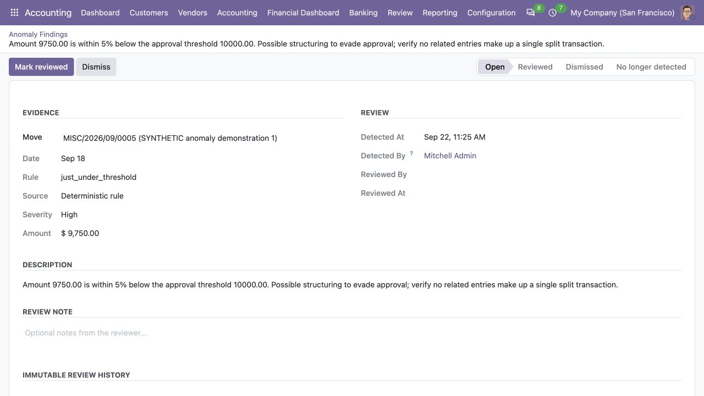
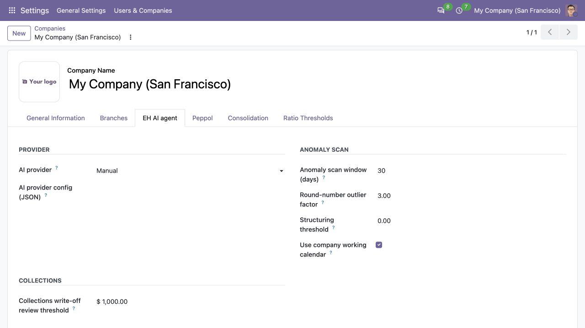

ERP HERITAGE / ODOO 20 COMMUNITY
Deterministic accounting AI that works the day you install it, with a provider hook ready for live LLM upgrades later.
LGPL-3 · Odoo 20 · v20.0.1.3.1 · Module guide, setup, workflows and rollout checks
The purpose
A reusable AI helper layer for the ERP Heritage accounting suite. It ships three accounting-specific capabilities, each with a working deterministic default that runs with zero API keys and zero network access, plus an optional provider hook for sites that later want live language-model output.
Inside Odoo 20
Captured from Odoo 20 Community using synthetic demonstration records. Configuration screens show the available workflow; external service connectivity still requires the relevant provider setup and validation.

Three open findings from the deterministic threshold rule identify synthetic amounts near the configured review threshold. They are review prompts, not LLM conclusions.
Captured 2026-09-22 after the actual deterministic anomaly scan ran over synthetic posted accounting entries in isolated Odoo 20 Community. The scan used the manual provider; no LLM, remote service or local model server was called.

A deterministic finding links its source journal entry, rule, amount and rationale to review-note, mark-reviewed and dismiss controls.
Captured 2026-09-22 after the actual deterministic anomaly scan ran over synthetic posted accounting entries in isolated Odoo 20 Community. The scan used the manual provider; no LLM, remote service or local model server was called.

Manual-provider company settings expose scan-window, outlier and review-threshold controls. This is a configuration view, not AI-generated output.
Captured 2026-09-22 from isolated Odoo 20 Community. The displayed company settings are a configuration example; the synthetic findings were generated by deterministic rules, and no provider or model was invoked.
Inside this module
Four anomaly rules, a variance template, and an eight-branch dunning ladder all run deterministically with no API key and no network. A site that never wants an LLM dependency gets real behaviour out of the box, and tests run end to end on the deterministic path.
The round-outlier rule self-suppresses below three positive amounts, variance handles zero-budget lines without divide-by-zero, the empty period still emits a placeholder line, and a threshold of zero deliberately disables the structuring rule. These are the small correctness cases cheaper helpers skip.
A per-company provider key selects manual, claude, openai, or local. The variance hook already returns a live provider's paragraph when one is configured. Any provider failure falls back to the deterministic result, so the suite never breaks on a missing or misconfigured key.
An approval threshold of zero deliberately disables the just-under-threshold rule, so the structuring control is opt-in rather than firing on every entry when no limit is set. The guard is covered by a test.
An active promise-to-pay suppresses dunning escalation ahead of the days-overdue ladder, so a partner who committed to a payment date is not chased past it, even at day 90, 120, or 180.
Reversal-pair grouping sorts account codes before keying, so a pair on accounts (1100, 5200) matches regardless of which way round the entries reference them. Same-user, same-amount, same-day duplicates surface as candidates.
The round-outlier rule returns nothing when there are fewer than three positive amounts, instead of computing a meaningless median on one or two entries and raising a false flag.
Variance lines never divide by zero: the percentage returns 0 when budget and actual are both zero and 100 when an actual exists against a zero budget. An empty or all-zero period still emits an explicit placeholder line so the close pack is never blank.
From input to outcome
Start with the deterministic rules and review a representative ledger sample before adding a language-model provider. Gather posted entries, configured rules, company scope, review records and optional provider configuration. Use a representative case with a known expected result so the team can separate configuration decisions from unexpected behaviour. Keep the supporting commercial or accounting evidence available during review.
Run the supported review workflow and inspect the evidence behind each generated finding or explanation. Follow the record’s available actions in the order intended by the workflow. Review the selected company, relevant dates and any validation messages before continuing. If the source data changes, reassess the result against the updated evidence.
A reviewer scans up to 200 selected posted entries, while the daily company-isolated cron checks up to 500 recent entries per company. Four deterministic rules identify population-relative round amounts, company-calendar non-working-day posts, just-under-threshold amounts, and exact opposing signed account-vector pairs. Findings are stored against journal entries with immutable evidence events and open, reviewed, or dismissed triage states. Buttons, list actions, smart counters, finding views, and company settings make the review flow available in Odoo.
Resolve false positives and material exceptions through normal accounting review; an automated suggestion is not approval to post or alter a transaction. Compare the outcome with the expected treatment for this case and record the reason for any difference that requires follow-up. Give exceptions an owner so they do not disappear inside a period-end spreadsheet.
Document rule ownership and optional provider data handling so reviewers know how a result was produced and who can refresh it. Include the accepted operating example, configuration choices and unresolved dependencies in the handover. Review them when business policy, source data or the surrounding Odoo applications change.
Business situations
AI Agent Layer is relevant to accounting reviewers and financial control teams who need to answer this question: Which ledger patterns merit human review, and can the rationale remain attributable? Start with the process that creates the decision, identify its owner and agree what evidence the reviewer needs. A narrow pilot helps the team evaluate the supported workflow using its own accounting data before broadening access.
Use the module’s assisted review role as one part of a controlled close. Bring the relevant posted entries, configured rules, company scope, review records and optional provider configuration to the review, then explain the result alongside the business event it represents. Establish which outputs become part of the reporting pack and which outstanding matters need a separate accounting decision.
Turn the business question into an acceptance case: Which ledger patterns merit human review, and can the rationale remain attributable? Use one ordinary example and one relevant exception from the supported scope below. Ask the intended operator to prepare it and the reviewer to explain the result. Retain that accepted example with the deployment notes so future changes can be assessed against an understood process.
Before the first result
Confirm that the organisation needs the supported assisted review process described here. Identify the responsible accounting reviewers and financial control teams and write down the decision they expect the module to support. Use the limitations section to separate shipped behaviour from an integration, professional judgement or operational service that needs another owner.
Prepare posted entries, configured rules, company scope, review records and optional provider configuration. Check the relevant records in the intended company and use dates that match the business event. Resolve missing accounting configuration before evaluating calculated output; plausible-looking totals do not establish that the chosen inputs or policies are correct.
This module declares Accounting Suite Base as part of its installation foundation. Its direct standard-Odoo dependencies are account. Review the actual dependency set in the target database before a rollout, especially where another addon also extends the same accounting models, menus or posting actions.
Define who operates AI Agent Layer, who reviews unusual results and who maintains configuration. Run the representative workflow below in a test database using the intended users. Confirm that users can reach the work they own and that the reviewer understands the available evidence before moving the process into live operation.
Workflow reference
Anomaly detection on journal entries runs four deterministic rules: round-number outliers against the full same-journal calendar-month population median; non-working-day posting from the immutable server-stamped posting instant in the posting user's timezone and the company's working-calendar policy; just-under-threshold amounts within 5 percent below the configured approval threshold; and exact opposing signed account vectors in the same journal and period, excluding Odoo-linked reversals. Open deterministic findings are withdrawn with an immutable event when evidence stops matching and reactivated if it recurs.
Variance commentary produces a plain-English headline for the close pack from a budget-vs-actual snapshot: it names the direction of the total variance (overran, underran, or on budget), highlights the top-N largest movers by absolute variance, and always emits a line even on an empty or all-zero period. With a live provider configured, this hook genuinely swaps in the provider's natural-language paragraph in place of the template.
Next-best-action suggestion picks the next collections step from an eight-branch deterministic dunning ladder, where an active promise-to-pay takes precedence over the days-overdue escalation so collections never get over-aggressive against a partner who has committed to pay.
A pluggable provider registry selects the provider per company through a configuration field (default manual). Provider stubs for hosted cloud LLM APIs and for self-hosted, OpenAI-compatible local endpoints self-register at import, validate their credentials, and refuse live calls until a separate separate provider extension re-registers under the same key. Every capability catches a provider failure and falls back to its deterministic result, so a missing or bad key never breaks the call site.
Anomaly detection is wired live into Odoo: each finding is stored against the offending journal entry as an Journal entry anomaly finding record with an immutable evidence trail and an open / reviewed / dismissed triage state. A Scan anomalies button on the entry, a list-view bulk action, and a daily per-company scheduled scan (savepoint isolated) keep the findings current. Variance commentary and the collections next-action ladder remain reusable helper functions for now, surfaced by their consuming suite modules rather than wired here.
The local provider accepts endpoint-only or model-only config because on-prem runtimes (Ollama, vLLM, llama.cpp) usually need no API key, unlike hosted providers which require both key and model. Malformed config raises a field-named error rather than failing silently.
When a provider is configured, the augmentation payload is capped at the first 50 findings or lines, so a very large period cannot build an unbounded prompt.
Flags exact thousand multiples that exceed the configured same-journal monthly population median multiplier. Self-suppresses below three positive amounts.
Uses the immutable posting instant in the poster's timezone and derives non-working weekdays from the company working calendar, with an explicit numeric fallback policy.
Flags amounts within 5 percent below the configured approval threshold. A threshold of zero disables it.
Requires exact opposing signed account vectors for the same user, journal, and calendar month; linked Odoo reversals are excluded.
Persists bounded evidence, immutable raw hashes and lifecycle events, and open, reviewed, dismissed, withdrawn, or reactivated review state.
Produces a direction-aware budget-vs-actual headline highlighting the top-N largest movers. With a live provider configured, the hook returns provider output in place of the template.
Eight-branch deterministic dunning ladder with active promises and recorded demand-letter evidence taking precedence over escalation.
Company settings select manual or an installed provider adapter. Provider failures fail closed or preserve prior narrative at consuming workflow boundaries.
Server-stamped UTC instant when this entry was posted. Weekend detection converts it to the posting user's timezone; the accounting date is not treated as a posting timestamp.
Identifier of the AI provider the capability hooks use. Defaults to 'manual', which routes every capability to its deterministic default. Set this to 'claude', 'openai', 'local', or any third-party adapter key to enable LLM augmentation; install the corresponding extension module first.
How far back the scheduled anomaly scan looks for posted journal entries. The manual scan on a selection ignores this and scans exactly what is selected.
A round-number entry larger than this multiple of the period median is flagged. Higher values flag fewer entries. Default 3.0.
Entries posted just under this amount are flagged as possible threshold structuring. Set to your approval ceiling. 0 disables the check.
Treat weekdays with no attendance on the company's working calendar as weekend/non-working posting days. When disabled or the calendar has no weekday attendance, use Weekend day numbers below.
Comma-separated ISO weekday numbers: Monday 0 through Sunday 6. Default 5,6 means Saturday and Sunday. Leave empty to disable the non-working-day posting rule when no calendar attendance is available.
Illustrative implementation exercise. A reviewer runs the deterministic checks over posted entries and sees a small group of unusual items. Open their evidence and ask whether each pattern has a valid explanation, a configuration cause or a genuine issue requiring follow-up. An anomaly label should prioritise review, not establish misconduct or require an automatic ledger correction. Record the review result using the available workflow and check that the company scope is appropriate. If the organisation wants additional narrative from a live provider, configure the separate extension deliberately and review its inputs and permissions. Keep the distinction between the recorded facts, a rule’s interpretation and a generated explanation visible to the person making the decision.
Questions before rollout
It is designed for accounting reviewers and financial control teams. Its central business question is: Which ledger patterns merit human review, and can the rationale remain attributable? The listing describes the shipped operating scope and the decisions that remain with the organisation. Evaluate it against your own records and review process, rather than treating the module name as a promise to cover every scenario in that accounting area.
Have posted entries, configured rules, company scope, review records and optional provider configuration ready, together with the person who owns the related accounting policy. Start with the deterministic rules and review a representative ledger sample before adding a language-model provider. A known example makes it possible to check the result and resolve configuration questions before the process is repeated across more records or companies.
Resolve false positives and material exceptions through normal accounting review; an automated suggestion is not approval to post or alter a transaction. Keep the relevant source evidence with the output and be explicit about company, date and policy choices. The most useful review asks whether the result follows from the business inputs, not only whether the operation completed without a validation message.
It belongs to the assisted review family. Its declared custom dependency foundation is Accounting Suite Base. Installing the complete suite also brings other operating and specialist modules; using this focused module should be evaluated against its own dependency list and scope. Optional services still need their own configuration and agreement where applicable.
Deterministic anomaly findings and review controls are complete in this package. Budget commentary and collections suggestions are displayed by their consuming suite modules rather than duplicated here. Document rule ownership and optional provider data handling so reviewers know how a result was produced and who can refresh it.
No. AI Agent Layer provides the specific records, calculations or workflow described in this listing. The organisation remains responsible for its source information, accounting choices, supporting evidence and review. Where the process uses an estimate, a contract assessment or an external service, appoint the appropriate owner before relying on the output.
Scope and requirements
Deterministic anomaly findings and review controls are complete in this package. Budget commentary and collections suggestions are displayed by their consuming suite modules rather than duplicated here.
Manual scans are capped at 200 selected entries and scheduled scans at 500 recent entries per company. These are bounded review controls, not unrestricted forensic population exports.
Company settings expose detector thresholds, working-calendar policy, provider selection, and provider configuration. Installed provider adapters own external credentials and transport.
Provider-generated evidence is sanitized and bounded before display while a SHA-256 digest retains identity of the full raw response. Provider adapters cannot override server-owned lifecycle decisions.
Standards references describe the accounting subject addressed by the module. They do not establish certification, statutory filing acceptance or suitability for every jurisdiction. Your finance team owns its assumptions, accounting policies and review.
Installation scope
Odoo installs the following direct dependencies automatically. Additional dependencies can be brought in by those modules. Related modules in the wider catalogue are optional unless they appear in this dependency chain.
Shared reporting engine for the ERP Heritage Odoo 20 Community accounting suite, providing a reproducible report-execution audit log and a move-version result cache. Append-only audit log of every report render with user, timestamp, the full options snapshot, runtime, and a SHA-256 result hash for XLSX and PDF output, plus a multi-company analytic-aware parameterised SQL builder with no raw user input in SQL, a three-tier User/Manager/read-only Auditor privilege model, and a currency-aware XLSX writer. Odoo 20 Community accounting reporting engine, reproducible financial report audit trail, move-version report cache invalidation, multi-company parameterised SQL builder, append-only audit log, read-only auditor role, SHA-256 report hash compliance, currency-aware XLSX export, analytic-aware journal item aggregation.
Included dependency: eh_account_base. The shared reporting engine under the ERP Heritage accounting modules: an append-only render audit log, precise per-company cache invalidation, and a whitelist-only parameterised SQL builder.
Odoo Community dependency required by this module. Its own dependencies and configuration remain part of the installation scope.
Acceptance guide
The following are recommended rollout checks, not claims of additional built-in features. Apply the checks relevant to this module and retain evidence of your own results.
Select a recent, closed period that your finance team understands well. Keep its approved source documents, ledger totals and existing working papers available. Reproduce that period in a staging database before working on current transactions. A familiar period makes differences visible: you can distinguish an opening balance problem from a configuration choice, a timing difference or a genuine defect. Agree which person owns each discrepancy and what evidence will close it. Successful installation is the starting point; a repeatable business outcome is the acceptance criterion.
Write down the output your team needs from this module: a reviewed transaction, an exported file, a reconciled balance, an approved schedule or an operational queue. Identify who prepares it, who reviews it and who relies on it next. Make the scope concrete with one company, one reporting period and a small representative document set. Include an ordinary case and an exception. This keeps the evaluation focused on the business decision instead of the number of available screens, and gives reviewers a consistent way to compare the new workflow with their current process.
Use the Odoo 20 edition of the module and its dependencies together. The manifest defines what Odoo installs automatically; a feature mentioned elsewhere in the wider product family is not automatically included. Review the dependency guide on this page before enabling the complete suite, especially where your deployment also uses Sales, Purchase, Inventory or website components. Confirm that your hosting arrangement accepts custom server modules and their Python requirements. Keep a copy of the installed module versions with your acceptance record so a later update can be checked against the same baseline.
Check the companies, currencies, fiscal periods, journals, accounts and partner records used by your sample. Confirm that account purposes agree with your chart of accounts and that archived records are not being selected inadvertently. Review company-specific settings while the intended company is active. Where a workflow needs bank details, analytic dimensions, product information or payment terms, validate those inputs with their owner. Clean master data reduces repeated exceptions and makes it easier to investigate the exceptions that remain. Keep the preparation list short enough for someone else to repeat it.
Decide which source establishes the opening position before introducing new transactions. Save the source date, company, currency and supporting reconciliation. If a module maintains a schedule or a working-paper balance alongside the ledger, document how that opening amount should tie to the general ledger. Do not use balancing entries to hide a difference during the pilot. Classify the difference, correct its source and rerun the comparison. The resulting trail is useful both for your internal reviewer and for support if an unexpected calculation needs investigation.
Choose named users for preparation, review and administration. Confirm their practical access by signing in as those users in staging, rather than relying on an administrator's view of the menus. A visible menu does not replace model access or record restrictions, and a hidden menu does not by itself prove that data is protected. For your own acceptance check, verify the specific business operations each role needs. If your organization requires separation of duties, include that policy in the rollout criteria and check the actual workflow against it before granting production access.
Run the sample with the intended company selected, then repeat the relevant navigation and search checks as a user assigned to a different company. Record which company owns each source document and each generated result. For users who work across entities, confirm how their allowed-company selection affects totals and available records. Investigate any cross-company difference before it becomes a month-end problem. Group-level work and company-level work have different scopes; use the appropriate module and document the scope on the review evidence instead of assuming one screen represents both.
Include a company-currency case and, where relevant to the module, a foreign-currency case. Check the date used to select exchange rates and keep the rate source available to the reviewer. Add a transaction near a period boundary so the team can see whether document date, accounting date or another business date drives the result. Test decimal precision with a small amount as well as a large one. Record the expected rounding treatment. These checks turn vague differences in totals into questions that can be resolved against your accounting policy.
Choose one result and follow the available links or record references back to the original business document. Compare its company, partner, amount, currency and dates with the expected source. Where the workflow creates a journal entry, inspect the accounts and balancing lines before relying on an aggregate report. Where it exports a file, compare the file's records with the selected batch. Save a small, intelligible evidence set instead of an indiscriminate screenshot archive. A reviewer should be able to explain what happened without needing the original preparer beside them.
If this module creates or updates accounting entries, separate preparation from the decision to post in your operating procedure. Inspect the proposed outcome, resolve missing configuration and confirm the intended period before using a posting action. If the module does not post entries, identify the equivalent commitment point, such as sending a file or approving a review record. Record who is allowed to make that decision. The page describes the module's supported workflow; your team still needs an operating policy that fits its accounting responsibilities and approval structure.
From pilot to production
Use a deliberately incomplete sample in staging: a missing required setting, an unsuitable date or a source document that is not ready for the next step. Observe the actual message and the record state that remains. Correct the input and repeat the operation. Check that the recovered result agrees with the ordinary successful case. For transactions already committed, use the supported correction or reversal workflow rather than editing database records. Your acceptance record should explain how staff recover from mistakes, because that is part of day-to-day usability, not an unusual administrative task.
Repeat an import, calculation, preparation step or button action only where the documented workflow permits it. Confirm whether the expected behavior is a recalculation, a refusal, a new version or reuse of an existing record. Do not infer universal duplicate prevention from one successful test. Record the behavior of the actual operation your team will use and include it in staff guidance. A small, identifiable sample makes duplicate records easy to spot and avoids creating a misleading acceptance result from a large batch with poorly understood contents.
Where accounting dates are involved, inspect your company's lock settings and the role that can change them. Include one sample dated inside a closed period and one in the open period, then observe the supported behavior with normal finance access. Agree how the team will handle late documents and approved corrections. The goal is a clear route for legitimate work that preserves the reason the period was closed. Record the policy alongside the module's workflow so operators know when to stop and involve the person responsible for the close.
If the module produces reports or exchange files, have the intended recipient inspect a sample. For a finance report, check the filters, company, dates, currency, labels and totals. For a bank or service file, use that recipient's own validation or test process before a production submission. Generating a structurally valid file does not establish acceptance by every provider. Keep the exact sample and any recipient feedback with the rollout record. Where no export is provided, agree which supported screen or linked record serves as the handover evidence.
Identify any step that depends on a separately configured provider, connector, credential or commercial service. Confirm the exact adapter and its requirements before scheduling a live demonstration. Some family modules provide deterministic rules or file preparation without a live external connection; their usefulness should be evaluated on that basis. Test a provider failure in staging only when the adapter offers a safe test route. Make it clear who manages credentials and provider subscriptions, and who should be contacted when an external service is unavailable.
Time the operations your staff will actually repeat, using a dataset that resembles your expected company, date range and document volume. Record the environment and sample size beside the timings. Include navigation, filtering, preparation and review rather than quoting a single best-case page load. This page makes no universal performance promise: network latency, database size, customizations and infrastructure affect results. Use measurements to choose a practical rollout batch size and to identify any operation that needs investigation before more users join the workflow.
Give staff a short exercise that begins with a business situation and ends with a reviewed result. Include the expected amount or state, the navigation route, the point at which a reviewer becomes involved and the supported correction route. Let operators explain why their result is correct. Add only the settings and exceptions relevant to their role. A concise internal playbook built from your own pilot is easier to maintain than a large collection of unannotated screenshots, and it helps new users understand the relationship between this module and the rest of Accounting.
Capture the module version, Odoo version, affected company, operation, exact message and a minimal sequence of steps. Use redacted sample documents when sharing evidence outside your organization. State the expected result and the actual result separately. Include the date filters and role used, because the same record can look different with another scope or set of permissions. Never include passwords, API tokens or private keys in a support message. Good reproduction details allow the problem to be investigated without guessing at your business setup or asking staff to repeat a full close.
Before deploying an update, back up the database and filestore together, and restore that backup into an isolated environment. Apply the module update there, then repeat the key pilot scenarios using the saved acceptance record. Check that existing documents remain readable and that the expected actions and menus still lead to the right workflow. Include one newly created record as well as an older one. Keep a rollback plan appropriate to your deployment and confirm that the backup can be restored before scheduling the production change.
Agree the release criteria before the pilot ends: expected financial results, access boundaries, supported corrections, output acceptance and owner sign-off. List unresolved items with their business impact instead of treating every observation as a blocker or dismissing it as cosmetic. Start production with a manageable scope and a named reviewer. Keep the first cycle's evidence so that later enhancements can be assessed against a concrete baseline. App-store descriptions help you select and understand the module; acceptance in your own configuration establishes whether the workflow is ready for your team.
Connected capabilities
These related modules explain how this workflow connects to the wider accounting process. Only the dependencies declared above are installed automatically. Choose optional additions for a specific business need.
Wires deterministic budget variance commentary live onto budgets in Odoo 20 Community. Each budget record gains a non-stored computed field that produces plain-English, direction-aware budget-vs-actual analysis without network access. The explicit AI refresh action stores only genuine provider output. A missing, manual, failed, or empty provider raises a clear error and leaves any existing AI narrative unchanged instead of persisting deterministic prose under an AI label.
A bridge module that wires the deterministic collections next-action engine live onto Collections case records. Every case gains stored, filterable action and priority keys plus a live translated rationale. Declared dependencies keep the stored keys current, while reading the rationale computes only viewer-local text and never writes those keys. The deterministic dunning ladder respects promises, plans, disputes, holds, documented demand-letter age, and write-off review evidence. It runs with zero network access by default. The explicit AI action stores only genuine provider output; a missing, manual, failed, malformed, or control-suppressed provider leaves any existing AI narrative unchanged instead of relabelling deterministic prose as AI.
The shared engine that powers the ERP Heritage accounting modules for Odoo 20 Community. It auto-installs as a dependency of any ERP Heritage accounting module, so you do not need to install it by hand.
ERP Heritage Community Accounting Pro installs a fixed collection of 50 direct accounting dependencies. Together with the suite itself and the transitive EH EDI Core foundation, its custom-module closure contains 52 modules. The collection brings reporting, reconciliation, payments, receivables, approvals, specialist accounting, group work and close controls into one Community installation. Its value comes from connecting those processes and their evidence; adoption still requires deliberate company configuration, accounting ownership and review. Australian BAS is available separately and installs the suite as its accounting foundation.
Plan the surrounding workflow
The following playbooks explain adjacent work in named companion modules. They are included here to help you plan the handoff around this module. Each companion is labelled as an installed dependency or an optional addition. These capabilities belong to that named companion, not to the standalone module you are reading about.
Optional companion; requires separate installation
Generate direction-aware budget-vs-actual narratives automatically on every budget, with or without an LLM provider.
Direction-aware commentary uses currency precision, symbol, and grouping, with the largest movers already picked out.
Deterministic commentary runs on every read with no API key or network. Provider output is fetched only by the explicit confirmed refresh action.
Exact source and provider fingerprints prevent an unchanged budget from calling and billing the provider twice. Failures preserve prior evidence and show a user-facing error.
A budget with no non-zero lines returns an explicit translated placeholder rather than a blank close-pack section.
A non-zero actual against zero budget receives the explicit 100 percent variance convention and stays visible among largest movers.
Income-only, expense-only, and mixed budgets use distinct economic directions. Mixed budgets compare net income less expenses, never an invalid unsigned blend.
Manual, missing, failed, or empty provider output raises a clear error on explicit refresh and preserves prior provider evidence. Deterministic read-time commentary remains available.
A non-stored read-time field consumes Budget Pro's sign-normalised actuals and exact credit-nature classification without network I/O.
Review this companion’s own setup and scope before connecting the workflows. Keep the company, reporting date and business document references consistent at the handoff.
Optional companion; requires separate installation
Route each case through an evidence-aware dunning ladder, make action and priority keys operationally searchable, and store provider prose only after a manager-confirmed refresh.
Action and priority are stored dependency-driven selections, so managers can filter, sort, and group their work queue. Human rationale stays a live translated field.
Manager-confirmed provider output stores actor, time, provider, and exact SHA-256 source fingerprint. Changed case facts mark it stale; direct RPC writes are refused.
Refresh is singleton and manager-only. A row lock plus exact source/provider fingerprint makes unchanged retries idempotent before any network call.
Active promises, payment plans, disputes, holds, and resolved stages remain authoritative workflow controls. Provider prose cannot restart dunning on those cases.
Manual letters and configured automated final notices stamp immutable demand-letter evidence. An existing letter routes to review rather than sending another; external referral needs a proved 30-day wait.
Write-off review uses exact overdue balance against company-currency materiality. Lower balances stay reviewable at medium priority; material balances receive high priority.
Missing, manual, failed, malformed, or control-suppressed providers raise a user-facing error and preserve existing narrative evidence byte-for-byte.
Stored selection keys for action and priority support search, grouping, and sorting; rationale stays translated and deterministic with zero network I/O.
Review this companion’s own setup and scope before connecting the workflows. Keep the company, reporting date and business document references consistent at the handoff.
Optional companion; requires separate installation
Multi-version budgets with purchase-order encumbrance, sign-aware variance, and an optional analytic dimension, computed straight from posted journal items.
An off/warn/block policy is enforced when a purchase order is confirmed, and the block path accumulates the required amount per budget line across every PO line before it checks availability. Several lines that each fit but together overrun are still caught. Commitments are idempotent per PO line, so re-confirming updates instead of duplicating.
Income, liability and equity accounts are sign-normalised before variance and availability are computed, so a revenue budget met to the dollar reads as zero variance, not a 200 percent overrun. A non-zero actual on a zero budget reads as a full 100 percent overrun rather than a silent 0 percent. The same maths runs in the ORM compute and the SQL report view, parity-tested.
LGPL-3 source on disk. No activation key, no phone-home, no recurring licence. Multi company aware, posted-only actuals computed in one batch SQL per budget so it stays fast on hundreds of lines. Read it, extend it, fork it if you need to.
Two purchase-order lines that resolve to the same budget line keep separate commitments keyed by PO line, instead of one silently overwriting the other. Re-confirming a PO updates the existing commitments rather than creating duplicates.
The block policy accumulates the required amount per budget line across multiple PO lines before checking availability, so several lines that each individually fit but collectively overrun the budget are still caught at confirm time.
A non-zero actual against a zero budget returns 100 percent to flag a full overrun, instead of being reported as a misleading 0 percent.
Actuals on credit-natured accounts (income, liability, equity) are sign-flipped before variance and availability are computed, so a 10k revenue budget against 10k actual reads as zero variance, not a 200 percent overrun. The report view replicates the same normalisation.
A billed purchase order with a zero or negative untaxed total releases its commitment fully rather than dividing by zero when computing the proportional release.
Review this companion’s own setup and scope before connecting the workflows. Keep the company, reporting date and business document references consistent at the handoff.
Optional companion; requires separate installation
Turn the aged receivable report into an active dunning workflow that creates, chases, and escalates a case per overdue customer on its own.
One GROUP BY SQL pass builds a case per overdue customer from open AR and refreshes it nightly. The follow up cron picks the next due level per case and sends it, so the queue moves whether or not a collector logs in.
Every call, email, follow up, and broken promise escalation writes a row to an action log that blocks write and unlink at the model level. Auto creation is idempotent and de duplicated by a partial EXCLUDE constraint, so re running the cron never doubles a case.
LGPL-3 source on disk. No activation key, no phone home, no recurring licence. Configure the ladder per company, swap in your own templates, and extend the workflow. Free today, free at renewal, because there is no renewal.
The nightly aging refresh zeroes the total on cases whose partner paid down their balance, so a customer who drops out of the overdue aggregation never lingers with a stale figure until someone clicks Refresh.
A resolved case is never reopened. A new overdue invoice spins up a fresh case so the resolution history stays intact. The EXCLUDE constraint only forbids two open cases for the same commercial customer, not a closed one plus a new one.
Broken promise escalation is idempotent. The cron records the exact immutable promise action it handled, so time passing can never re escalate the same commitment while a newer promise remains independently eligible.
Follow up counters increment with an atomic SQL UPDATE then a cache invalidation, so a manual send and the scheduled cron hitting the same case at once cannot clobber each other with a read modify write race.
The late fee wizard computes flat or prorated percent per month fees in Decimal with ROUND_HALF_UP, revalidates the live ledger at issuance, and records the invoice under a database unique issuance fingerprint so the same exposure, policy, and issue date cannot be charged twice.
Review this companion’s own setup and scope before connecting the workflows. Keep the company, reporting date and business document references consistent at the handoff.
ERP Heritage
Start with the workflow, setup and acceptance guide above. For implementation or support, share your Odoo version, module version, business scenario and a redacted example. Keep credentials and personal data out of support messages.
Published by ERP Heritage. Odoo is a trademark of Odoo S.A.; this independently developed application is not an Odoo S.A. product or endorsement.
Package: eh_account_ai_agent · Release: v20.0.1.3.1 · License: LGPL-3.